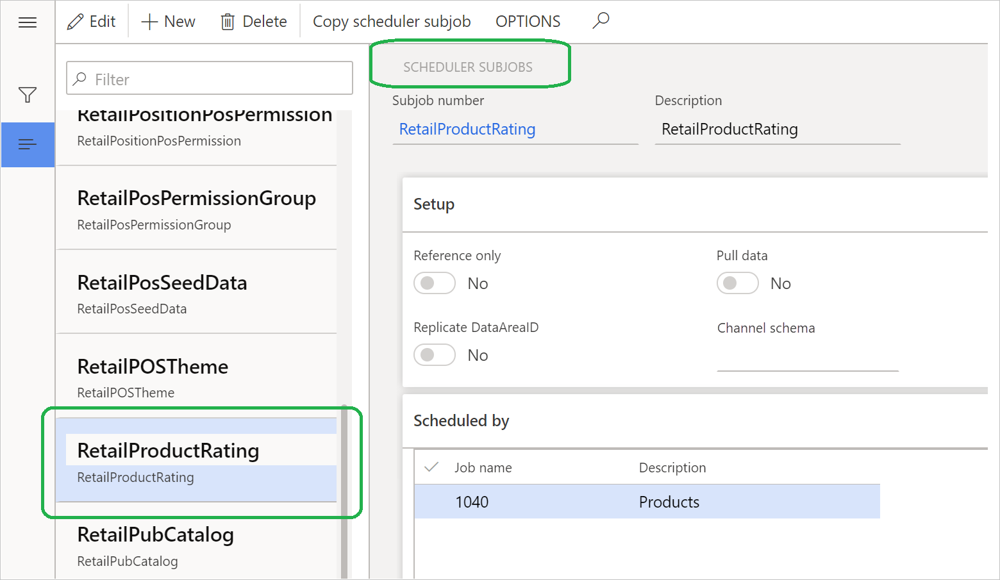

Sync product ratings in Dynamics 365 Commerce
This topic describes how to sync product ratings in Microsoft Dynamics 365 Commerce.
Overview
To consume product ratings in omnichannels, such as at the point of sale (POS) and in call centers, product ratings from the ratings and reviews service must be imported into the Commerce channel database. When product ratings are made available in omnichannels, they can help customers indirectly during their interactions with sales associates.
This topic describes following tasks:
- Configure Product ratings sync job as a batch job to synchronize product ratings from the Ratings and Reviews service.
- Verify that the batch job for product rating synchronization was successful.
- Make product ratings available at the POS.
Configure a batch job to synchronize product ratings
Important
Before you start, make sure that version 10.0.6 or later of Dynamics 365 Commerce is installed.
Initialize the commerce scheduler
To initialize the commerce scheduler, follow these steps.
- Go to Retail and Commerce > Headquarters setup > Commerce scheduler > Initialize commerce scheduler. Alternatively, search for "Initialize commerce scheduler."
- In the Initialize commerce scheduler dialog box, make sure that the Delete existing configuration option is set to No, and then select OK.
Verify the RetailProductRating subjob
To verify that the RetailProductRating subjob exists, follow these steps.
- Go to Retail and Commerce > Headquarters setup > Commerce scheduler > Scheduler subjobs. Alternatively, search for "Scheduler subjobs."
- In the subjob list, find or search for the RetailProductRating subjob.
The following illustration shows an example of the subjob details in Commerce.

Note
If you don't find the RetailProductRating subjob, you might already have run the Sync product ratings job and the 1040 CDX job before you initialized the Commerce scheduler. In this case, follow these steps to run the Full data sync job.
- Go to Retail and Commerce > Headquarters setup > Commerce scheduler > Channel database. Alternatively, search for "Channel database."
- Select the channel database to sync.
- On the action pane, select Full data sync.
- In the Select a distribution schedule drop-down dialog box, select 1040 - products, and then select OK.
- Repeat the steps of the previous procedure to verify that the RetailProductRating subjob has been created.
Import product ratings
To import product ratings into Commerce from the ratings and reviews service, follow these steps.
- Go to Retail and Commerce > Headquarters setup > Commerce scheduler > Sync product ratings job. Alternatively, search for "Sync product ratings job."
- In the Pull product ratings dialog box, on the Run in the background FastTab, select Recurrence.
- In the Define recurrence dialog box, set up a recurrence pattern. (The suggested value is two hours.) Don't schedule a recurrence that is less than one hour.
- Select OK.
- Set the Batch process option to Yes. This setting helps guarantee that you will be able to audit the logs and verify the status of batch job runs.
- Select OK to schedule the batch job.
The following illustration shows an example of batch job configuration in Commerce.

Verify that the batch job for product rating synchronization was successful
To verify that the Sync product ratings batch job was successful, follow these steps.
- Go to Retail and Commerce > System administrator > Inquiries > Batch jobs or, if you're using a Commerce-only stock keeping unit (SKU), Retail and Commerce > Inquiries and reports > Batch jobs instead. Alternatively, search for "Batch jobs."
- To view the details of the batch job, in the batch job list, in the Job description column, search for a description that contains "Pull product ratings."
- Select the job ID to view the batch job details, such as the scheduled start date/time and the recurrence text.
The following illustration shows an example of the batch job details in Commerce when the batch job is scheduled to run at two-hour intervals.
Make product ratings available at the POS
The ratings and reviews solution in Dynamics 365 Commerce is an omnichannel solution. However, products ratings aren't shown at the POS by default. To help customers in stores see ratings and reviews when they are being helped by sales associates, you must turn on product ratings at the POS.
To turn on product ratings at the POS, follow these steps.
- Go to Retail and Commerce > Commerce setup > Parameters > Commerce parameters. Alternatively, search for "Commerce parameters."
- On the Configuration parameters tab, select New.
- Enter a name such as RatingsAndReviews.EnableProductRatingsForRetailStores, and set the value to true.
- Select Save.
- Go to Retail and Commerce > Retail and Commerce IT > Distribution schedule. Alternatively, search for "Distribution schedule."
- In the job list, select 1110 (Global configuration), and then select Run now.
- After the job has successfully run, verify that products ratings are now shown at the POS.
The following illustration shows an example of the configuration of the Commerce parameters to turn on product ratings at the POS.
The following illustration shows an example of product ratings at the POS.

The following illustration shows an example of product ratings in call center channels.